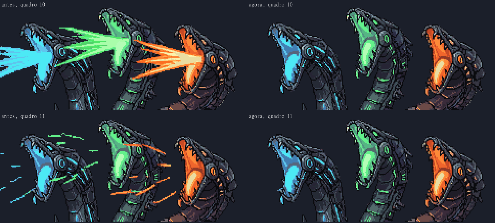
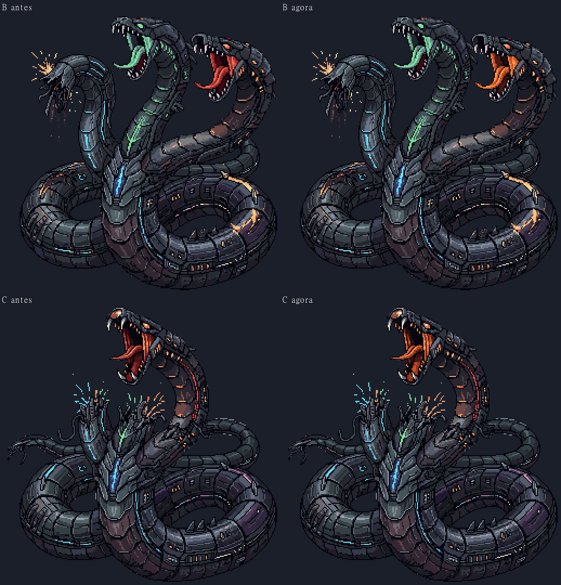
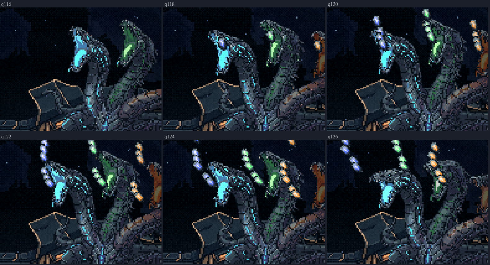
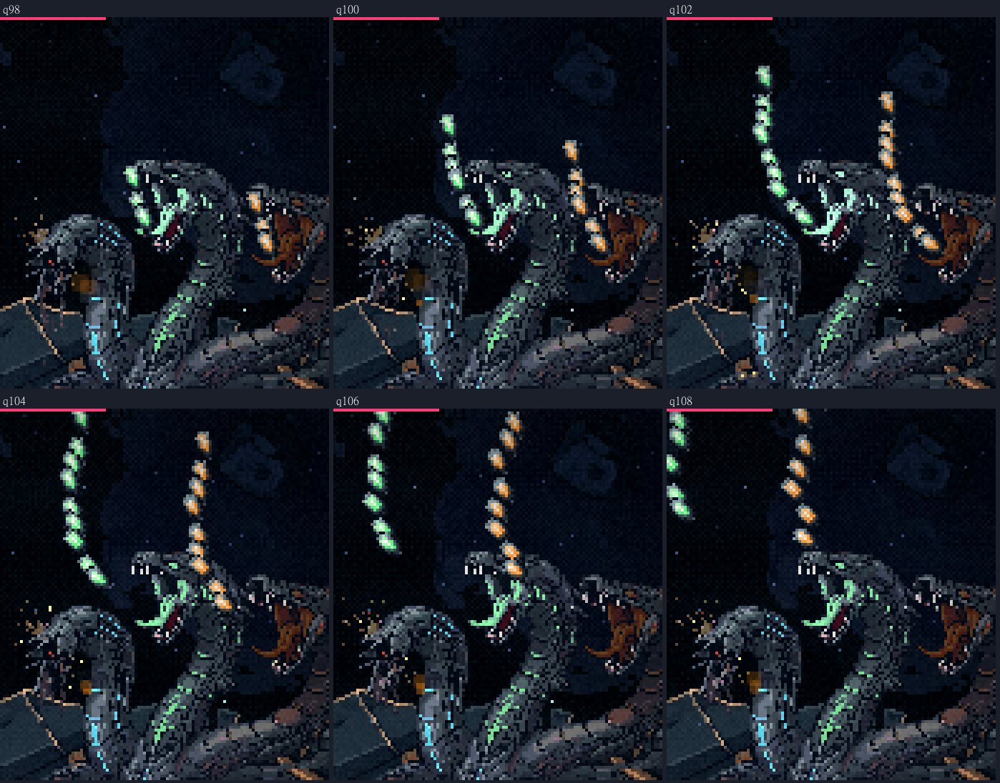
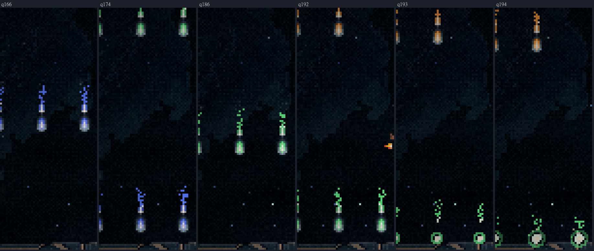

A Serpente: a chuva de casulos no jogo
03/11/2026 · pausa 3, a primeira habilidade instalada · nada foi commitado.
Depois das suas respostas: as duas correções
O cuspe da chuva saiu. No clipe da chuva da A, o gerador tinha pintado três jatos grandes no quadro do ataque e riscos soltos no seguinte. Tirei só isso, como nos tiros da rodada 14.
- A boca aberta e acesa de cada cabeça ficou: onde o jato cobria a boca, ela volta do quadro vizinho, que tem a mesma boca sem o jato.
- Os outros 14 quadros do clipe são idênticos, byte a byte.
- A salva agora são só os casulos saindo das bocas.

A boca da laranja no erguer agora é a brasa, como no tiro aprovado e nos cercos. O erguer aparece na luta na forma B (tiros comuns e chuva) e na forma C (rajada e leque).
- Recolori só a garganta e a língua, pelo brilho de cada pixel.
- O olho, o focinho, as aberturas laterais e a faixa vermelha do pescoço da C ficaram como eram, porque são luzes e arte da cabeça. Conferi cada um, quadro a quadro.
- Os quadros de boca fechada, e todo o erguer da A, ficaram idênticos.

O que entrou
A chuva é a da maquete que você aprovou (rodada 3, com o casulo da rodada 14):
- Cada cabeça viva lança uma salva de 9 casulos para cima e para fora, com o motor desligado.
- Acima da tela, eles viram e voltam de nariz, parados no começo e acelerando até o casco, onde estouram. É uma onda por cabeça, na cor dela.
- Forma A: 3 ondas (azul, verde, laranja), com o clipe da chuva. Forma B: 2 ondas (verde, laranja), com o erguer.
- São 10 vagas de 22 px, todas na frente dela. O vão de 3 vagas anda uma vaga por onda.
- Na maquete o vão começava sempre na mesma vaga e andava para a direita.
- No jogo, a vaga de início e o sentido são sorteados a cada chuva.
- O casulo fere subindo e descendo.
Ampliado



Medido no jogo
A sonda nova (_sonda-hab.mjs chuva) passou nas duas formas:
- As ondas: 3 na A e 2 na B, com 7 casulos cada.
- A salva: 27 casulos sobem na A e 18 na B (9 por cabeça).
- Quem segue o vão passa: 0 acertos.
- Quem fica parado embaixo de um casulo é atingido: 3 acertos na A, 2 na B.
- A caixa do acerto segue o voo: 7×11 descendo e 9×9 subindo, em todas as medidas.
- Nenhum casulo passa do casco.
As outras sondas continuam passando: ela fica no posto também durante a chuva, o corpo leva dano, e os tiros comuns seguem iguais.
Ficou anotado
- Na verde do erguer da B, a garganta também é vermelho-escura (a língua e o céu da boca são verdes). Ela é pequena e escura, e você falou da laranja, então não mexi. Se quiser, recoloro com o verde.
- O erguer da A tem as três bocas rosa de carne, mas ele não aparece mais na luta: a A tem os gestos próprios. Fica como está.